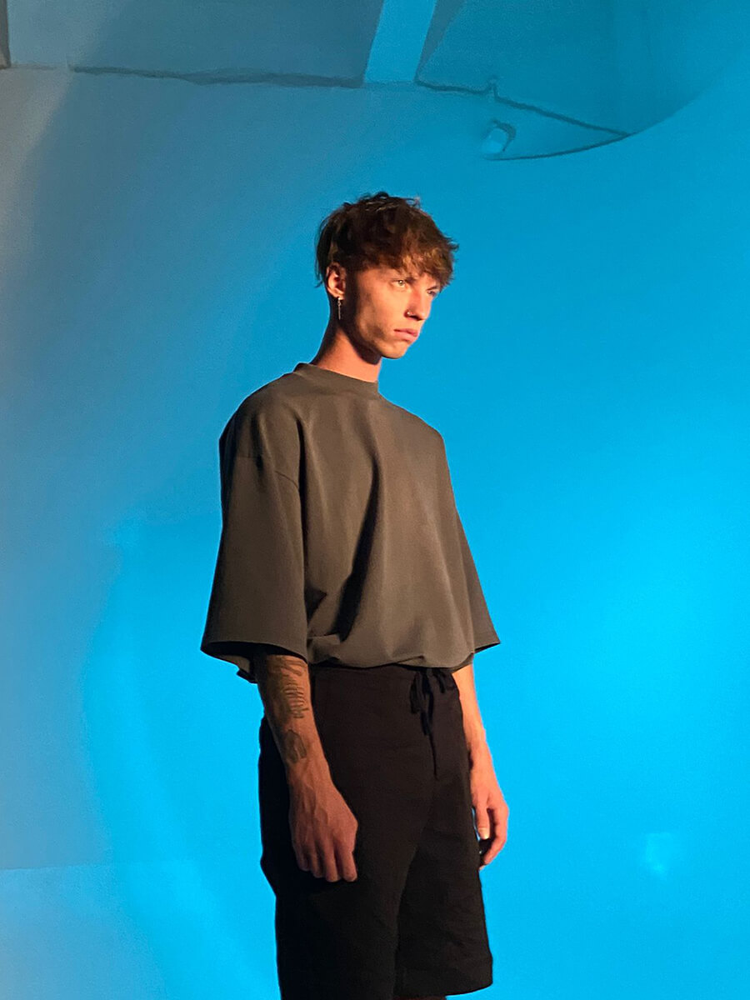

История танцора

Лёша Летучий
Алексей Летучий — танцовщик и хореограф, победитель шоу «Танцы на ТНТ».
Выступает с артистами и развивается в индустрии.
Его путь — пример роста с нуля до сцены.
Перейти в InstagramПросто начни — и всё получится
Танцы — это способ самовыражения, через который человек передаёт эмоции без слов.
Они помогают лучше чувствовать своё тело, развивают координацию и уверенность.
Регулярные занятия делают человека более раскрепощённым и открытым.
Для многих танцы становятся образом жизни.
Развивают мозг
Снижают стресс
Уверенность
Пластика
Энергия
Настроение
Начать можно с любого уровня — главное желание.
Выбери стиль и начни с базовых движений.
Важно тренироваться регулярно.
Не бойся ошибок — через них приходит уверенность.
Главное — получать удовольствие.
Посещай мастер-классы
Расширяют опыт и ускоряют рост.
Снимай себя
Помогает видеть ошибки.
Тренируйся регулярно
Главный фактор прогресса.
Развивай стиль
Делает тебя уникальным.
Нужны не только движения, но и уверенность.
Участвуй в конкурсах и выступлениях.
Показывай себя.
Развивай харизму и эмоции.
Со временем сцена станет комфортной.

Алексей Летучий — танцовщик и хореограф, победитель шоу «Танцы на ТНТ».
Выступает с артистами и развивается в индустрии.
Его путь — пример роста с нуля до сцены.
Перейти в InstagramВот к чему ты можешь прийти, если начнёшь заниматься танцами 👇
С каждым шагом тело начинает запоминать ритм, движения становятся увереннее, а внутри рождается ощущение гармонии. Постепенно приходит гибкость — не только физическая, но и внутренняя. Уходит скованность, появляется лёгкость, раскрывается уверенность в себе.
Позволь себе начать — и ты удивишься, как много силы, грации и свободы уже есть в тебе.
Подписывайся на Telegram-канал — там больше полезного и вдохновения